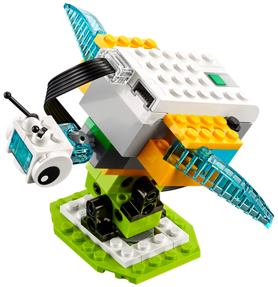
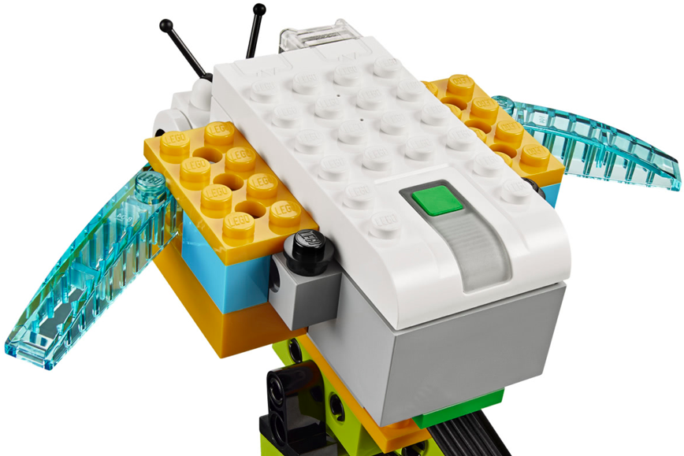
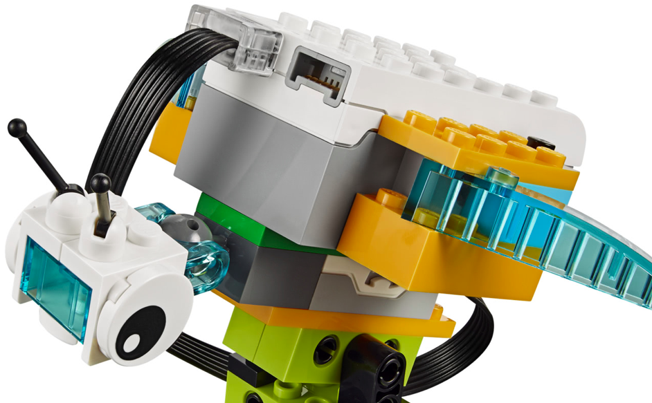
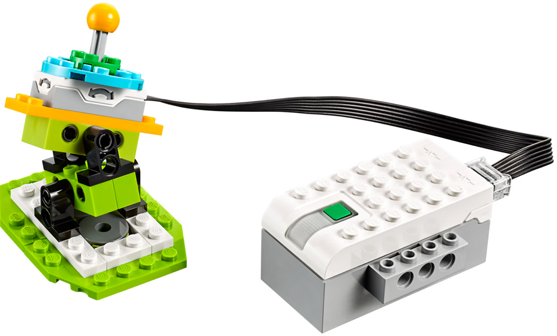
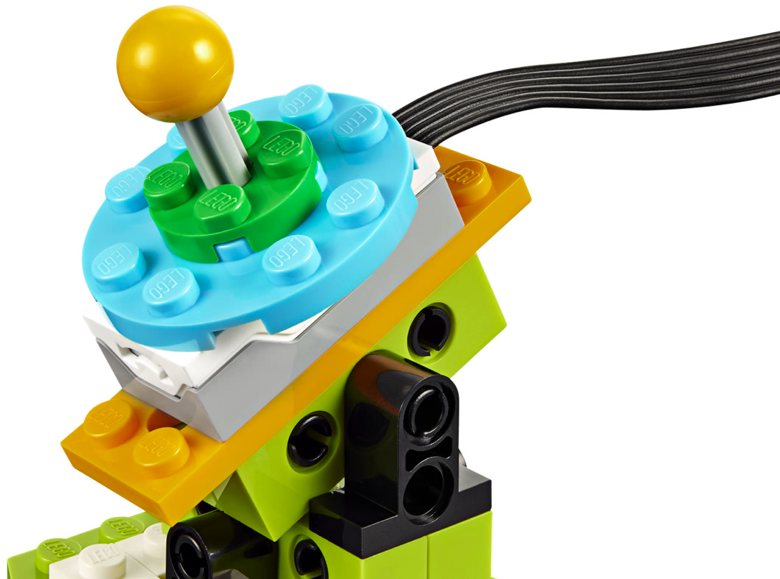
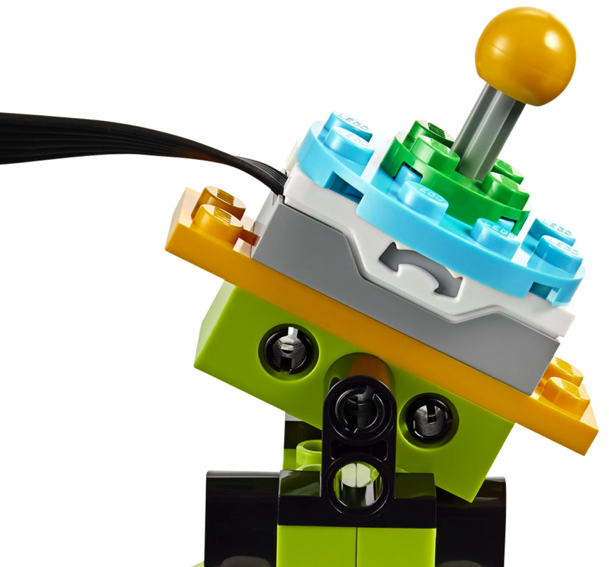

En este proyecto el alumno debe construir la base del los dos siguientes montajes. Debe hacer una serie
de retos iniciales para ver como se realiza el movimiento y como se traslada de un sitio a otro.
El primer montaje tiene las instrucciones para construir la parte de los engranajes. Este robot será la base
para los dos siguientes robots.
Los dos robots siguientes no tienen instrucciones y solo disponen de 3 fotos. Se construyen sobre la
base del montaje anterior.
El alumno debe aprender a utilizar todas las propiedades del sensor de inclinación, tanto la detección de las 5 distintas posiciones, así como también utilizar el valor devuelto por el sensor como variable.
• Hacer que el robot haga un sonido diferente por cada posición del sensor de inclinación.
• Repetir pero esperar a una palmada antes de realizar el sonido.



• Hacer que el robot muestre una imagen diferente por cada posición del sensor de inclinación.
• Hacer que el robot muestre la imagen correspondiente al valor del sensor de inclinación (Ojo: no es lo
mismo que el ejercicio anterior).



• Hacer que el robot muestre en pantalla el valor que tiene el sensor de inclinación en cada momento.
• Hacer que el robot sume la cantidad que tenga el valor del sensor de inclinación.
• Hacer que el robot muestre los resultado de las tablas de multiplicar.
{kind=link}
{kind=link}